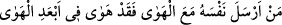
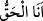
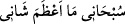
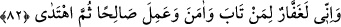
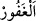

olmuş demektir. “Hevâ”nın esas anlamı, yüksek bir dağdan aşağıya düşüp helâk
olmaktır.
Zemahşerî’nin
beliğ
sözlerinden
birisi
şöyledir:
“
(Kim nefsini hevâsına tâbi kılarsa en yüksek
havadan/yerden aşağı düşer.”
et-Te’vîlâtü’n-Necmiyye’de der ki: “Size kudret helvası ile bıldırcın eti lutfettik.”
Kudret helvası sıfatlarımıza, bıldırcın eti ise bizim ahlâkımıza işârettir. “Size rızık
olarak verdiklerimizin temiz olanlarından yiyin,” Yâni bizim güzel sıfatlarımıza
bürünün ve sizi şereflendirdiğimiz üstün ahlâkımızla ahlâklanın. Rabbânî inayet
imdadınıza yetişmeseydi; kalb, ruh ve onların sıfatları, nefis Fir’avn’undan ve
sıfatlarından kurtulamazdı. İlâhî yardım size yetişmeseydi, Allâh’ın sıfatlarıyla muttasıf
olamaz ve O’nun ahlâkıyla ahlâklanamazdınız. “Bu hususta taşkınlık ve nankörlük de
etmeyin;” Yani benim sıfatlarımla ve ahlâkımla kendi sıfat ve ahlâkınızdan müstağnî
olunca hem ubûdiyyet hem rubûbiyyet iddiâsında bulunarak haddi aşmayın. Benim bir
sıfatımla muttasıf olmakla bazılarının “
, bazılarının “
” dediği gibi
benim ismimle kendinizi isimlendirmeyin. Bunlara benzer hâller insan tabîatından
meydana gelir. “İnsan ise azar; kendini kendine yeterli gördüğü için.” (el-Alak
96/6-7) İşte bu tâifenin böyle sözlerle haddi aşması her ne kadar kendi hâllerinden ileri
gelse de Allâh’ın gadabını mûcib olur. Çünkü haller makamlar için uygun düşmez.
“Sonra sizi gadabım çarpar. Kimi de gadabım çarparsa, hakikaten o, yıkılıp
gitmiştir.” Yani onun ubûdiyyet konusundaki bütün muâmelelerini, saçılmış zerreler
haline getirir/değersiz kılarız. İşte bu sebeple Allah şöyle buyurarak kullarına hidâyet
talebinde bulunmayı emretmiştir: “(Ya Rabbi) Bizi doğru yola ilet. Nimet verdiğin
kimselerin yoluna... Kendilerine gadab edilmiş olanların ve sapmışların yoluna
değil!” (el-Fatiha, 1/5-7) Yani bize öyle bir hidâyet ver ki, tâat ve ubûdiyyete muvaffak
kılınma nimetine erip sonra da gadabını indirecek bir taşkınlıkla sınadıklarının
hidâyetinden başka olsun.
82. Şu da muhakkak ki ben, tevbe eden, inanan ve yararlı iş yapan, sonra
(böylece) doğru yolda giden kimseyi bağışlarım.
“Şu da muhakkak ki ben,” şirkten ve zikredilen taşkınlığında dâhil olduğu
isyanlardan “tevbe eden,”e karşı çok bağışlayıcıyımdır.
el-Mesâbîh’ın şerhi el-Mefâtîh’ta şöyle der: “
” ile “
” arasındaki fark şudur:
el-Gafûr, mağfireti çok olan demektir. Mağfiret, işlediği günahları affederek müstehak
olduğu cezâdan kulu korumaktır. Bir şeyi kirden koruyacak örtü ile kaplamak
anlamındaki “el-gafr” kökünden türemiştir. Herhalde el-Gaffâr binâsının ziyâdeliği